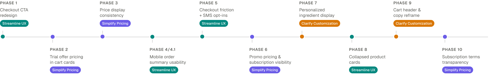
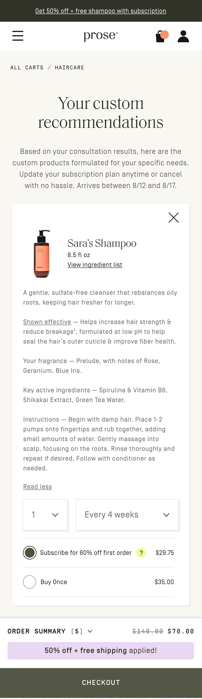
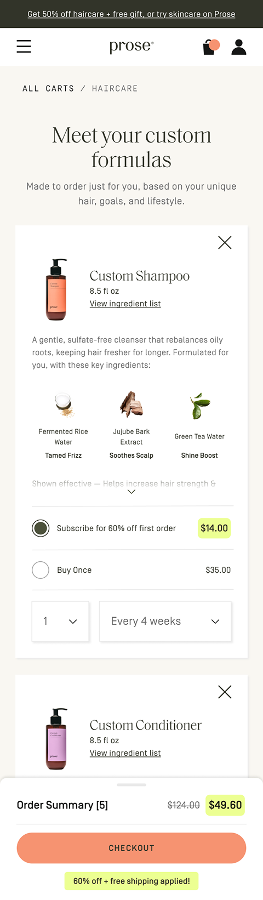
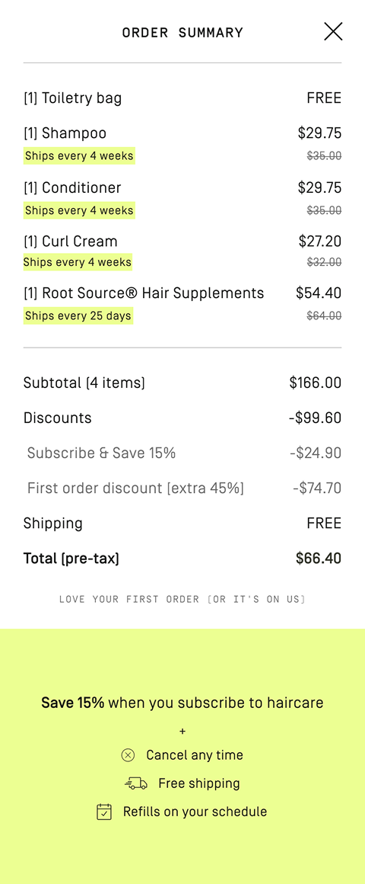
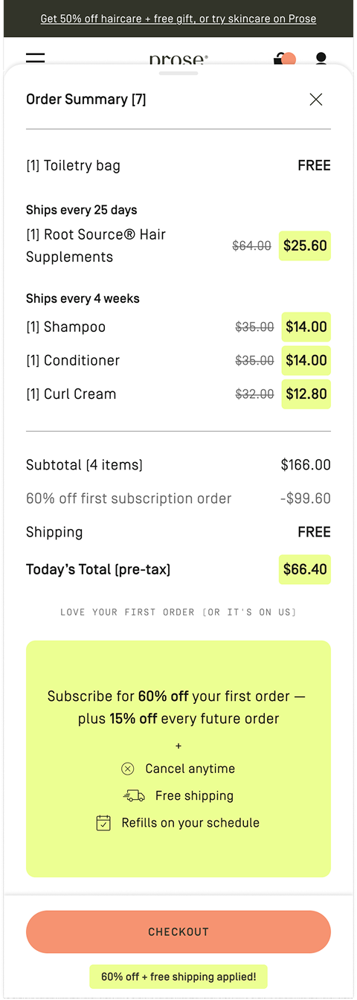
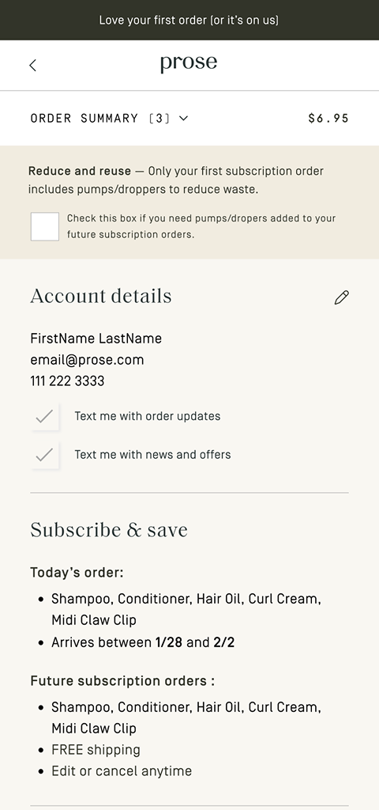
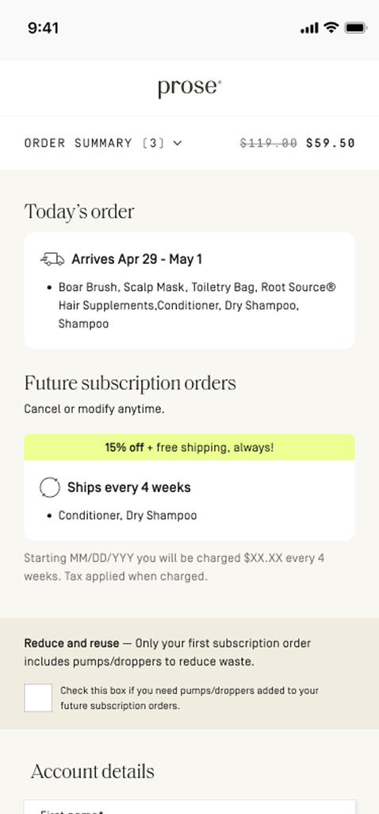

Cart

Order Summary

Checkout
I led UX strategy and execution for a 10-phase, experiment-driven optimization across the cart, order summary, and checkout — delivering measurable conversion lifts and a roadmap that shaped the company's 2026 product direction.
Prose creates fully customized haircare and skincare based on a detailed consultation. After completing the consultation, customers land directly in a cart where they see their personalized products for the first time. As a result, the cart has to do a lot of heavy lifting: explaining the personalization, clarifying pricing and subscriptions, and guiding users toward checkout.
Additionally, the team tackled work as large initiatives that took a long time to scope, got descoped by engineering, and left us shipping less than we'd designed. Cross-functional dependencies slowed things further. A full redesign wasn't going to fly — we needed to deliver value inside those realities.
I had identified some key issues firsthand through a heuristic review — the cart buried our 60% discount behind 15% subscription pricing, the order summary split discounts into confusing line items, and competing promos diluted the message. I brought these findings to the team, and we validated them against funnel data, session recordings, and user testing. The patterns clustered clearly into three areas, which became our strategic pillars.
Reduce friction across the purchase flow
Make pricing transparent and subscription benefits clear
Showcase personalization value upfront
Rather than a big-bet redesign, I pushed to break the work into smaller phases. My product partner and I started shipping the highest-impact opportunities first. When results came back positive, the approach sold itself and leadership got behind it. That's how we ended up with 10 targeted experiments, each building on the last.



The cart needed to lead with value, not bury it. We surfaced the 60% first-order discount, replaced a hidden checkout button with a floating CTA, and made ingredients visible to reinforce personalization.
Showing 60% in the cart created a mismatch with the 15% in the order summary. We shipped it anyway — the lift was worth it, and we already had a plan to fix it in the next phase.


We simplified the discount breakdown to one clear line, grouped products by frequency, and gave the first-order price prominent placement. On mobile, a full-page takeover became a bottom sheet to keep users in the flow.
Our first attempt improved the contents of the modal — but nothing changed. Session recordings revealed users didn't realize they were still in the cart. I pivoted the team to replace the modal with a bottom sheet, solving the real problem.


Checkout had to balance business goals, user needs, and legal requirements without scaring users off. We combined SMS opt-ins, removed a back button that was bleeding drop-off, and tucked legal terms behind progressive disclosure.
We tried giving users full subscription pricing visibility at checkout. It backfired — the screen was already text-heavy, and adding more detail turned a moment of commitment into a wall to read through. We rolled it back and returned with a more visual, scannable approach.
The insights from this work didn't just improve the existing experience — they validated the phased approach and paved the way for a project I'd long been advocating for: a full lower funnel redesign. It was approved for the 2026 roadmap, and the new experience pulls shopping and decision-making into a dedicated Routine page, freeing the cart to do what carts do best.
I set the direction and changed how the team worked: moving from large, high-risk initiatives to continuous experimentation. I stayed close to the craft, designing the early phases myself before transitioning execution to a senior designer I mentored. That way of working informed how the broader team approached product going forward.
When something didn't work, we learned from it and came back smarter.